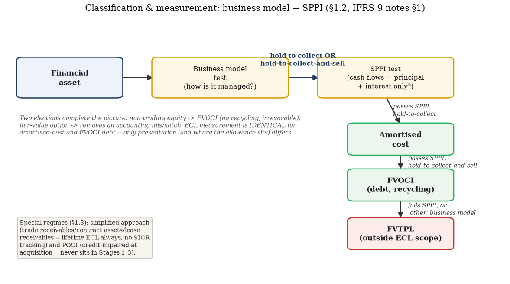
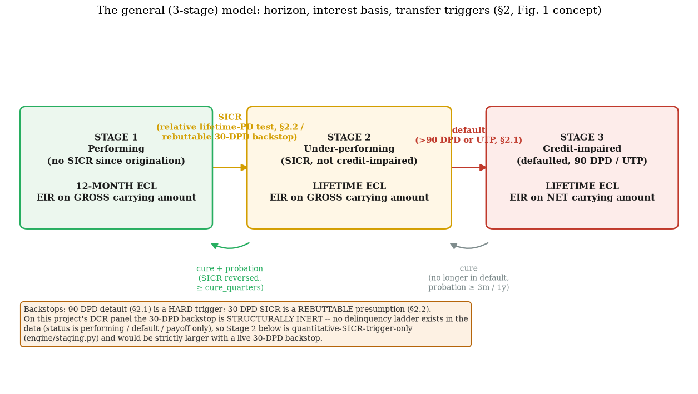
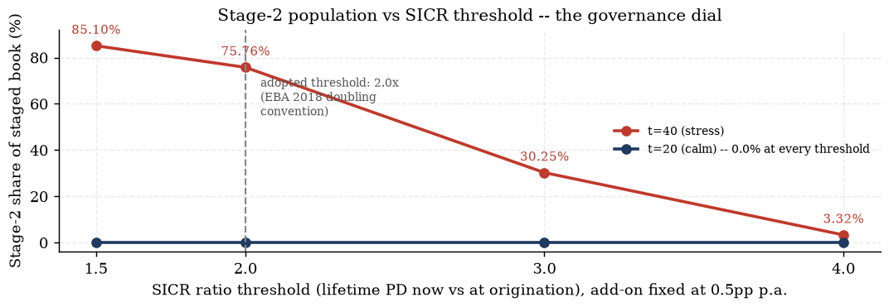
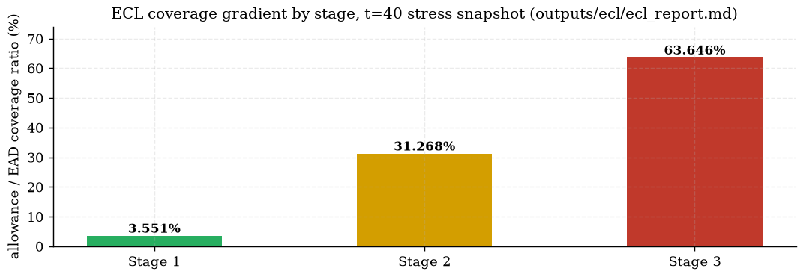

This chapter covers the front matter of IFRS 9 impairment: why the standard exists in its current
forward-looking form, how an asset is classified into the population ECL even applies to, and the
mechanics of the three-stage model that decides how much ECL a given exposure carries. The
chapter closes by walking the project's own staging engine end to end — the exact rule implemented,
the calm-vs-stress finding it produces on the synthetic Data Consortium (DCR) panel, and the ECL
consequence of getting the stage wrong. Later chapters build on this: Chapter 2 derives the ECL formula
itself in full; Chapter 5 returns to PIT/TTC, the philosophy staging's SICR test is built on.
1.1 Why ECL replaced incurred loss
IFRS 9 Financial Instruments (IASB) replaced IAS 39 with effect from annual periods beginning
on or after 1 January 2018. The decisive reform is impairment. IAS 39's incurred-loss
model recognised a credit loss only after a loss event had already occurred — judged “too
little, too late” in the post-2008 review, and structurally procyclical: because no loss could be
booked before a triggering event, provisions arrived in a cliff at exactly the point in the cycle when a
bank could least afford it. IFRS 9 replaces that with a forward-looking
expected credit loss (ECL) model that provisions from initial recognition — before
any default has happened, using probability-weighted, forward-looking information (knowledge/corpus/ifrs9_credit_risk_notes.md
§1).
Definition.The three pillars of IFRS 9. (i) Classification & measurement
(§1.2 below); (ii) impairment — the ECL model this compendium is mostly about; (iii) hedge
accounting (with an optional IAS 39 carve-out retained for macro fair-value hedging, out of scope here).
What this means. The single sentence that explains most of what follows: incurred loss asks
“has something bad already happened?”; expected loss asks “given everything we know
today, what is the probability-weighted loss we expect over the relevant horizon?” Every
mechanism introduced in the rest of this chapter — staging, the SICR test, the 12-month/lifetime
split — exists to operationalise that second question without either (a) recognising the full
lifetime loss on every performing loan on day one (too conservative, and not risk-sensitive) or
(b) waiting for default (back to the incurred-loss cliff). Staging is the compromise: almost everything
starts at a cheap 12-month proxy for lifetime loss, and only migrates to the full lifetime measure once
credit risk has genuinely deteriorated.
1.2 Classification: business model + SPPI, and the special regimes
Before ECL can be computed at all, an asset must be routed into the population ECL applies to. ECL
applies to financial assets at amortised cost and debt instruments at
FVOCI; lease receivables (IFRS 16); contract assets (IFRS 15); and loan commitments and
financial guarantee contracts not measured at FVTPL. Equity instruments and anything at FVTPL sit outside
ECL scope entirely — their fair-value movements already absorb credit deterioration
(knowledge/corpus/ifrs9_credit_risk_notes.md §1.1).
Definition.Business model test. How the asset is actually managed: hold to
collect contractual cash flows → amortised cost; hold to collect and sell → FVOCI;
anything else (trading, fair-value management) → FVTPL. Unlike IAS 39's held-to-maturity rules there
is no “tainting”: occasional sales — e.g. in response to credit deterioration —
do not by themselves break a hold-to-collect model.
Definition.SPPI test. Contractual cash flows must be solely payments of
principal and interest, where interest compensates only for time value of money, credit risk,
liquidity, other basic lending costs and a profit margin — a “basic lending arrangement”.
Leverage (e.g. cash flows at 2× a benchmark rate), equity or commodity linkage, or non-genuine
prepayment features fail SPPI → mandatory FVTPL. For financial assets, embedded derivatives
are not separated out; the whole instrument is assessed as one.
Business model \ SPPI
Passes SPPI
Fails SPPI
Hold to collect
Amortised cost
FVTPL
Hold to collect & sell
FVOCI (debt, with recycling)
FVTPL
Other (e.g. trading)
FVTPL
FVTPL

Exhibit 1.1 — The classification triage: business-model test → SPPI test → measurement category, with the two elections and the two special regimes noted (knowledge/corpus/ifrs9_credit_risk_notes.md §1.2–1.3).
Two elections complete the picture, and two special regimes sit alongside the general model:
Definition.Elections. Non-trading equity may be irrevocably
designated FVOCI without recycling (a presentation election, not a measurement one — equity
is outside ECL scope regardless). The fair-value option may be used to remove an
accounting mismatch. For FVOCI debt: interest (EIR), impairment and FX go to P&L; the residual
fair-value change goes to OCI and recycles on derecognition — so ECL measurement is identical
for amortised-cost and FVOCI debt; only presentation differs (FVOCI carries the asset at fair value,
with the loss allowance recognised in OCI rather than netted off the carrying amount).
Definition.Simplified approach. For trade receivables, contract assets and lease
receivables, lifetime ECL is recognised at all times — no SICR tracking, no Stage 1. It is
mandatory for trade receivables/contract assets without a significant financing component, an
accounting-policy choice for the rest. Implemented in practice as a provision matrix:
historical loss rates by ageing bucket, adjusted for forward-looking information. Not available for
ordinary loans — every worked example in this compendium's staging and ECL chapters uses the
general (three-stage) model.
Definition.POCI (purchased or originated credit-impaired) assets are
credit-impaired at initial recognition. They never sit in Stages 1–3: the entity uses a
credit-adjusted EIR (which builds initial lifetime ECL into the yield) and subsequently
recognises only the cumulative change in lifetime ECL since initial recognition — which
can be a gain if the loan performs better than expected.
Gotcha. The business-model test is about the portfolio-level intent, not a promise about
any one loan's fate — a bank that occasionally sells loans to manage concentration risk is still
“hold to collect” provided sales are infrequent/insignificant or explained by credit risk
increases; do not confuse this with the old IAS 39 held-to-maturity tainting rule, which IFRS 9
deliberately abolished. Separately: SPPI failure routes an asset to FVTPL and takes it outside ECL
scope entirely — a common interview trap is to ask “what is the 12-month ECL on this FVTPL
bond?” The answer is that the question is malformed; FVTPL assets have no ECL allowance at all.
Check yourself.
A bank holds a portfolio of retail mortgages, servicing them to maturity, but occasionally sells a
handful of loans each year to manage regulatory capital. Does this alone break the hold-to-collect
business model?
Answer
No. IFRS 9 deliberately removed IAS 39's tainting rule; infrequent or insignificant
sales — even ones motivated by risk or capital management — do not by themselves disqualify a
hold-to-collect classification. The test looks at the stated objective and pattern of the business model,
not a zero-tolerance sales rule.
A loan's coupon is contractually 2× a floating benchmark rate. Does it pass SPPI?
Answer
No. Leverage embedded in the cash-flow formula (here, a 2× multiplier on the
benchmark) means the cash flows are not solely payments of principal and interest — the instrument
fails SPPI and is measured at FVTPL, which also removes it from ECL scope.
Why does POCI accounting never place a loan in Stage 1, 2 or 3?
Answer
Because the loan was already credit-impaired when acquired or originated, so there is
no “initial recognition, not yet deteriorated” state for it to start in. Instead of tracking
SICR from a clean starting point, the credit-adjusted EIR bakes the initial expected loss into the
effective yield, and subsequent P&L only reflects the change in lifetime ECL — which
can even be a gain if performance improves.
1.3 IFRS 9 vs Basel IRB vs CECL
The most common interview discriminator, and the most common implementation error, is re-using Basel
IRB parameters in an ECL engine without stripping their built-in conservatism. The three regimes answer
different questions on purpose (knowledge/corpus/ifrs9_credit_risk_notes.md §4):
Dimension
IFRS 9 ECL
Basel IRB
US CECL (ASC 326)
Objective
accounting provision (expected loss)
capital for unexpected loss
accounting provision
PD horizon
12-month (Stage 1) / lifetime (Stages 2–3)
always 12-month
lifetime for all assets, day 1
PD philosophy
point-in-time, forward-looking
often through-the-cycle / hybrid
PIT + reversion to history beyond forecast horizon
LGD
unbiased, PIT, EIR-discounted
downturn, conservative, floors
unbiased lifetime
EAD
unbiased; behavioural life for revolvers (¶5.5.20)
downturn CCFs, regulatory floors
contractual life incl. prepayment; unconditionally cancellable undrawn excluded
Conservatism
neutral, probability-weighted
prudential margins + floors
neutral
Staging
3 stages via SICR
—
none (single lifetime bucket)
Note.Subtleties worth quoting in a review meeting. Basel workout LGD accumulates
cash flows over the full workout period against exposure at default, while IFRS 9 references the
exposure at the start of the reference period — one reason Basel LGD generally exceeds IFRS 9 LGD
even before any downturn add-on. In downturns the ordering can flip for PD: PIT IFRS 9 PDs spike above
TTC regulatory PDs exactly when the cycle turns (Chapter 5 makes this precise via the Vasicek framework).
Empirically (Behn & Couaillier, ECB WP 2841, 2023), IFRS 9 provisions are higher pre-default and more
shock-responsive than under IAS 39 — yet most provisioning still occurs at default, so the standard
softened, but did not remove, cliff effects.
Gotcha. “We already have IRB models, just plug them in” fails on four axes at
once, not one: horizon (12m → lifetime term structure needed), philosophy (TTC → PIT
transformation needed — Chapter 5), bias (downturn LGD/EAD → unbiased), and floors (regulatory
floors must be stripped out). Each adjustment needs its own documentation and its own validation; treating
this as a single relabelling exercise is the single most common implementation failure mode cited in
supervisory reviews.
Check yourself.
A bank's IFRS 9 LGD model on defaulted retail mortgages consistently comes out lower than the
same book's Basel IRB downturn LGD. Is that necessarily a red flag?
Answer
Not necessarily — it is often exactly what should happen. Basel downturn LGD is
deliberately conservative (capital for unexpected loss, stressed by regulatory floors); IFRS 9 LGD is
meant to be an unbiased, PIT estimate. If the two coincided exactly, that would itself be suspicious
evidence that the Basel conservatism was never removed.
Under CECL, does a newly originated, fully performing loan get any ECL allowance on day one? Under
IFRS 9?
Answer
Yes to both, but at different magnitudes. CECL requires a full lifetime ECL
allowance from day one for every asset (no staging). IFRS 9 also requires a day-one allowance, but only
the 12-month ECL (Stage 1) unless the asset is already credit-impaired or was SICR-affected at
origination — so the day-one IFRS 9 allowance is typically much smaller than the day-one CECL
allowance on the same loan.
1.4 The three-stage impairment model and the definition of default

Exhibit 1.2 — The general (three-stage) model, redrawn in this compendium's palette from the source concept (knowledge/corpus/img/ifrs9_credit_risk_notes.md_fig001.png; knowledge/corpus/ifrs9_credit_risk_notes.md §2).
Stage 1 (no significant increase in credit risk since origination): 12-month
ECL — the portion of lifetime ECL arising from default events possible within 12
months. This is not a 12-month-truncated lifetime loss, and not the loss restricted to loans
certain to default within the year — it is the full expected-loss calculation, applied to a shorter
horizon. Stage 2 (SICR, not credit-impaired): lifetime ECL, with interest
still recognised on the gross carrying amount. Stage 3 (credit-impaired /
defaulted): lifetime ECL, with interest unwound on the net carrying amount (gross minus
allowance) — the practical effect of “interest income can no longer accrue on a portion the
entity does not expect to collect”.
Definition.Default (best practice — CRR Art. 178 / EBA/GL/2016/07
alignment, assumed throughout this compendium). An obligor is in default when either (i) it is
more than 90 days past due on a material credit obligation, or (ii)
unlikeliness-to-pay (UTP) indicators apply: distressed restructuring with a diminished
obligation (>1% NPV loss), bankruptcy, sale of the obligation at a material credit-related loss,
non-accrual, or a specific credit-risk adjustment. Materiality is a dual threshold: absolute
(≤€100 retail, ≤€500 non-retail) and relative (1% of on-balance exposure, capped
at 2.5%). Return from default requires a probation period: at least 3 months without UTP
indicators, and at least 1 year after a distressed restructuring.
What this means. Aligning the IFRS 9 default definition with the prudential one is a deliberate,
BCBS-d350-endorsed choice, not a coincidence: it keeps the same PD/LGD reference data usable across
accounting, capital, and internal risk management, rather than maintaining two parallel default ladders.
This project's engine inherits that alignment directly — Stage 3 in engine/staging.py
is defined as exactly the panel's default_event flag, with no separate accounting-only
default logic.
Gotcha. Stage 2 is not default and must never be reported as such under the CRR —
a Stage-2 loan is merely one whose relative risk has increased since origination; it may still
be fully performing (no missed payments at all). Conflating “Stage 2” with “in
trouble” in a governance conversation is a real, recurring communication failure — see the
pitfall box in §1.5.
Check yourself.
A loan is 45 days past due but no UTP indicator applies. Is it in default under this definition?
Answer
No. The hard default backstop is >90 DPD; 45 DPD alone does not meet either default
limb (past-due or UTP). It could, however, be relevant to the SICR test's 30-DPD rebuttable
presumption (§1.5) — that is a Stage-2 signal, not a default one.
Why is 12-month ECL described as “the 12-month portion of lifetime ECL” rather
than “ECL truncated to 12 months”?
Answer
Because it is defined as the loss arising from default events that are possible
within the next 12 months, weighted by their probability and computed over the full expected-loss
formula (probability × LGD × EAD, discounted) — it is a genuine expected-loss quantity
over a short window, not merely the first 12 months' worth of a longer cash-flow projection artificially
cut off.
A loan completes a distressed restructuring on 1 March 2025. Under the probation rule above, what is
the earliest date it can exit default (assuming no further UTP indicators arise)?
Answer
1 March 2026 — the rule requires at least 1 year after a distressed restructuring
(the longer of the two probation clocks; the "3 months without UTP" clock is the general rule, but a
distressed restructuring specifically requires the 1-year clock).
1.5 SICR — the relative lifetime-PD test (with a worked toy example)
SICR is a relative deterioration test, not an absolute credit-quality test: compare the
lifetime PD over the remaining life at the reporting date with the lifetime PD
expected for that same period at initial recognition. A loan originated risky and still
equally risky has not suffered SICR — it was priced and provisioned for that risk level
from day one (knowledge/corpus/ifrs9_credit_risk_notes.md §2.2). Typical implementations combine:
Quantitative: a relative threshold on (annualised) lifetime PD — a doubling
(200% relative increase) is the most common convention, used in the EBA 2018 stress-test methodology and
echoed in ECB backstop proposals (a threefold 12-month PD increase, applied only above a PD of 0.3%, plus
an absolute 12-month PD > 20% trigger) — usually paired with an absolute add-on
so tiny PDs cannot flip stages on noise;
Qualitative: watchlist status, forbearance flags, internal downgrade beyond a set
number of notches;
Backstop: a rebuttable presumption of SICR at 30 days past due;
Low-credit-risk exemption: investment-grade-equivalent exposures may be left in Stage
1 without a full SICR assessment (widely used for bond books);
Cure: transfer back to Stage 1 requires the SICR to have reversed, usually with a
probation period to prevent oscillation.
Pitfall (stated in the source notes). Two traps. (1) Stage 2 is not default and must not
be reported as such under the CRR. (2) Staging is the single most consequential modelling choice in
IFRS 9: crossing into Stage 2 switches the horizon from 12-month to lifetime, often multiplying the
allowance several-fold with no change in the loss expectation, only in the measurement window.
Thresholds should be risk-grade-sensitive (a 0.05%→0.12% move matters less in absolute-loss terms
than 5%→12%, yet both are “more than doubling”), and Stage-2 population size must balance
early recognition against provision volatility.
The source notes state the “same remaining life” rule but never work a number through it.
The reason the phrase same remaining life is load-bearing — not just careful wording —
is the subject of the derivation below.
Derivation.Why the comparison window must be held fixed — a synthetic toy example.
1.Setup. Consider a small 8-quarter
(2-year) instalment loan with an age-dependent baseline hazard $\lambda_0(a)$ exhibiting the classic
retail “seasoning hump” (rises then falls):
$$\lambda_0(a):\quad a{=}1{:}\,1.0\%,\ 2{:}\,1.8\%,\ 3{:}\,2.4\%,\ 4{:}\,2.8\%,\ 5{:}\,2.6\%,\ 6{:}\,2.2\%,\ 7{:}\,1.8\%,\ 8{:}\,1.4\%.$$
A covariate offset $c$ (LTV, macro, refinancing moneyness, …) shifts the hazard multiplicatively
via the cloglog form (Chapter 3 derives this in full from continuous-time proportional hazards;
here it is simply borrowed):
$$\lambda(a\mid c)=1-\big(1-\lambda_0(a)\big)^{\exp(c)}.$$
The reporting date is $t=4$: the loan has aged to $4$, leaving a remaining life of
$R=8-4=4$ quarters — ages $5,6,7,8$.
2.Case A — no real deterioration
($c_{\text{now}}=c_{\text{orig}}=0$ for both legs). The cumulative PD over the full original life
(ages 1–8, offset 0), via the survival product $S(t)=\prod_{k\le t}(1-\lambda_k)$:
$$\text{PD}_{\text{full life}}=1-\prod_{a=1}^{8}\big(1-\lambda_0(a)\big)=0.149354\ \ (14.9354\%).$$
The cumulative PD over just the remaining life (ages 5–8, offset 0):
$$\text{PD}_{\text{remaining, now}}=1-\prod_{a=5}^{8}\big(1-\lambda_0(a)\big)=0.077670\ \ (7.7670\%).$$
3.The WRONG test (mismatched windows):
naively divide the current remaining-life PD by the originally-declared full-life PD:
$$\frac{\text{PD}_{\text{remaining, now}}}{\text{PD}_{\text{full life}}}=\frac{0.077670}{0.149354}=0.5200.$$
This looks like credit risk has fallen to 52.0% of its origination level — purely because
4 remaining periods were divided by an 8-period figure, with zero actual change in the
borrower's risk. Nothing about the loan changed; the artifact is entirely a horizon mismatch.
4.The CORRECT test (same window, ages
5–8, on both legs): project the ORIGINATION-covariate leg over the identical remaining-life window
that the CURRENT-covariate leg uses — i.e. “the lifetime PD expected for that same period at
initial recognition”, computed literally:
$$\text{PD}_{\text{orig}}(5\text{-}8)=1-\prod_{a=5}^{8}\big(1-\lambda_0(a)\big)=0.077670=\text{PD}_{\text{remaining, now}}$$
$$\Rightarrow\ \text{ratio}=\frac{0.077670}{0.077670}=1.0000\ \Rightarrow\ \text{correctly NO SICR}.$$
Same-window, same-offset legs are identical by construction — the correct test is silent, exactly as
it should be, since nothing has actually changed.
5.Case B — real deterioration. Now
let the reporting-date covariates carry a genuine deterioration, $c_{\text{now}}=\ln(2)$ (a 2×
hazard multiplier — e.g. an LTV/macro shift), while $c_{\text{orig}}=0$ is unchanged. Per-age
hazards on the remaining window:
$$\lambda(a\mid \ln 2):\quad a{=}5{:}\,5.1324\%,\ 6{:}\,4.3516\%,\ 7{:}\,3.5676\%,\ 8{:}\,2.7804\%$$
(each roughly, but not exactly, 2× the offset-0 hazard — the cloglog transform is nonlinear).
Cumulative PD over ages 5–8 at this offset:
$$\text{PD}_{\text{remaining, now}}^{(B)}=1-\prod_{a=5}^{8}\big(1-\lambda(a\mid \ln 2)\big)=0.149308\ \ (14.9308\%).$$
6.The WRONG test still masks it. Compare
against the (unchanged) origination-declared full-life figure from Step 2:
$$\frac{0.149308}{0.149354}=0.9997.$$
A genuine 2× hazard-level deterioration reads as essentially no
change at all under the mismatched-window comparison — the shrinking-horizon artifact from
Step 3 (which pushed the ratio down) very nearly cancels the real deterioration (which pushes the ratio
up), for a false reading of “nothing happened”. This is the classic bug: it is not merely
imprecise, it can flip the SICR decision in either direction depending on how the two effects happen to
net out.
7.The CORRECT test recovers the true signal.
Same window (ages 5–8) on both legs:
$$\frac{\text{PD}_{\text{remaining, now}}^{(B)}}{\text{PD}_{\text{orig}}(5\text{-}8)}=\frac{0.149308}{0.077670}=1.9223.$$
This correctly isolates the covariate-driven deterioration, landing close to (but not exactly) the
underlying 2.0× hazard multiplier — the small gap from 2.0000 is not an error; it is
the expected nonlinearity of cumulative PD as a sub-additive function of a multiplicative per-period
hazard shift (visible in the marginal-PD table: survival depletion means later periods contribute
progressively less to both legs, compressing the ratio slightly below the raw hazard multiplier).
Worked example. Marginal-PD table for the correct (same-window) comparison, Case B (see
marg_orig/marg_now in the scratch derivation script):
age $a$
$S_{\text{orig}}(a{-}1)$
$\lambda_{\text{orig}}(a)$
marginal PD (orig)
$S_{\text{now}}(a{-}1)$
$\lambda_{\text{now}}(a)$
marginal PD (now)
5
1.000000
2.6000%
0.026000
1.000000
5.1324%
0.051324
6
0.974000
2.2000%
0.021428
0.948676
4.3516%
0.041283
7
0.952572
1.8000%
0.017146
0.907393
3.5676%
0.032372
8
0.935426
1.4000%
0.013096
0.875021
2.7804%
0.024329
$S(8)$ / cumulative PD
0.922330 → 7.7670%
0.850692 → 14.9308%
Applying the project's own annualisation and add-on convention (§1.6 below; here $R=4$ quarters, so
$4/R=1$, i.e. no rescaling is needed for this particular toy window) to the CORRECT comparison:
$$\text{ann_pd}_{\text{orig}} = 1-(1-0.077670)^{4/4}=0.077670\ (7.7670\%\text{ p.a.}),\quad
\text{ann_pd}_{\text{now}} = 1-(1-0.149308)^{4/4}=0.149308\ (14.9308\%\text{ p.a.})$$
$$\text{addon}=14.9308\%-7.7670\%=7.1638\text{pp} > 0.5\text{pp}\ \Rightarrow\ \text{passes the add-on test},$$
$$\text{but ratio}=1.9223 \le 2.0\ \Rightarrow\ \textbf{Stage 1}\ \text{(fails the ratio test — a genuine borderline case)}.$$
Recomputed in full: scratch derivation script (not a project fixture —
tests/ is read-only source for this campaign; this toy example is original to this chapter,
built to the campaign brief's spec).
What this means. Two lessons in one example. First, the mismatched-window comparison is not
merely “a bit off” — in Case B it very nearly hid a genuine 2× hazard-level
deterioration entirely (ratio 0.9997 ≈ 1), which is exactly the failure mode “same remaining
life” is written to prevent. Second, the correctly-computed ratio of 1.9223 in Case B sits just
below a 2.0× threshold — a real, material deterioration that a doubling convention
would still classify as Stage 1. This is not a flaw in the toy example; it is the point of §1.7's
threshold-sensitivity exhibit below: the ratio threshold is a governance dial, and cases sitting just
below it are exactly where that dial's setting matters most.
Gotcha. A practitioner who computes “lifetime PD at origination” once, at $t=0$, and
then simply compares it to “lifetime PD now” at every later reporting date has built the WRONG
test from Step 3/6 above — and the direction of the resulting bias is not predictable in general
(it depends on the shape of the age-hazard curve and how far into the loan's life the comparison is made).
The only robust fix is to always re-derive both legs over the identical remaining-life window at
each reporting date, which is exactly what §1.6's lifetime_pd_now /
lifetime_pd_orig pair does in this project's engine.
Check yourself.
In Case A of the toy derivation, the WRONG test's ratio was 0.52 even though nothing changed about the
loan. Why is 0.52 not itself evidence of credit improvement?
Answer
Because the 0.52 arises purely from comparing a 4-period cumulative PD against an
8-period cumulative PD — fewer periods almost mechanically means a smaller cumulative default
probability, regardless of the per-period hazard level. It is an artifact of the horizon mismatch, not a
signal about the borrower.
Why is the correct-test ratio in Case B (1.9223) not exactly 2.0, given the hazard was scaled by
exactly $\exp(\ln 2)=2$ at every age in the window?
Answer
Because cumulative PD is a nonlinear (sub-additive) function of the per-period hazard:
survival depletes faster on the "now" leg (higher hazards), so later ages in the window contribute
progressively less incremental probability on that leg than a naive linear scaling would suggest. The
marginal-PD table shows this directly — by age 8 the "now" leg's survival $S(7)=0.875$ is already
well below the "orig" leg's $S(7)=0.935$, compressing the ratio below the raw 2.0× hazard multiplier.
Suppose the project's SICR threshold were lowered from 2.0x to 1.5x. Using the toy example's Case B
ratio of 1.9223, would this loan now be flagged Stage 2?
Answer
Yes — 1.9223 > 1.5, so at a 1.5x threshold (and given the add-on test already
passes at 7.16pp > 0.5pp) this loan would move to Stage 2. This is exactly the governance-dial effect
quantified at portfolio scale in §1.7's threshold-sensitivity exhibit.
1.6 The project's SICR implementation: thresholds, probation, the inert 30-DPD backstop
The DCR engine (engine/staging.py) implements the §1.5 rule exactly, at portfolio
scale: for every loan at reporting quarter $t$ with remaining contractual life $R=\text{mat_time}-t$
(floored at 1 quarter), it computes lifetime_pd_now and lifetime_pd_orig over
the identical age window $t{+}1,\dots,t{+}R$ — the same age baseline $\lambda_0(a)$ enters
both legs, so only the frozen covariate offset differs between them, exactly matching the derivation in
§1.5. Origination covariates are reconstructed per loan from panel columns (contractual origination
LTV, FICO/occupancy at origination, prepayment incentive relative to the origination-quarter median market
rate, and lagged macro at origination time), with two documented approximation flags
(orig_macro_approx, orig_rate_proxy) for edge cases.
Result.The project's Stage-2 rule (StagingConfig defaults).
$$\text{Stage 2 iff}\quad \underbrace{\text{lifetime_pd_now} > 2.0\times\text{lifetime_pd_orig}}_{\text{ratio_threshold}=2.0}\ \ \textbf{AND}\ \ \underbrace{\text{ann_pd_now}-\text{ann_pd_orig} > 0.5\text{pp}}_{\text{abs_addon}=0.005}$$
$$\text{where}\quad \text{ann_pd} = 1-(1-\text{lifetime_pd})^{4/R}\quad\text{(quarters}\to\text{per-annum equivalent)}$$
$$\textbf{OR}\quad \text{the 30-DPD backstop (STRUCTURALLY INERT — see below)}.$$
Probation (cure_quarters=2): a Stage-2 loan returns to Stage 1 only after the trigger has
been off for 2 consecutive quarters; because the quantitative trigger is a pure (memoryless) function of
each quarter's covariates, the sticky state machine is exactly equivalent to the stateless window rule
“Stage 2 iff the trigger fired at any of $t,t{-}1$”.
What this means. The AND condition matters as much as the ratio: a loan whose lifetime PD moves
from 0.05% to 0.12% at origination has technically “more than doubled”, but the 0.5pp
annualised add-on floor stops that kind of noise-level move from flipping stage — exactly the
§1.5 pitfall box's point that thresholds must be risk-grade-sensitive. The annualisation
$\text{ann_pd}=1-(1-\text{PD}_{\text{life}})^{4/R}$ exists purely so the same 0.5pp add-on threshold is
comparable across loans with different remaining lives $R$ — without it, a loan with 40 quarters
remaining would need a much larger cumulative-PD move to clear the same add-on than a loan with 4 quarters
remaining, for the same underlying annual risk change.
Warning.The 30-DPD backstop is structurally inert on this dataset. IFRS 9's
rebuttable presumption of SICR at 30 days past due requires a delinquency ladder to exist in the data. The
DCR panel's loan status is only performing / default / payoff — there is no 30/60/90-DPD
staging ladder — so the implemented hook (config.backstop_30dpd=True,
config.dpd_col='dpd_time') can never fire: the column does not exist in the panel. This is a
documented simplification, not an implementation gap: the hook is written and would work
the day a DPD column exists, but every Stage-2 population reported in this chapter is
quantitative-trigger-only and would be strictly larger with a live 30-DPD
backstop, since the backstop can only ever add loans to Stage 2, never remove them
(outputs/staging/staging_report.md).
Gotcha. Do not read “30-DPD backstop inert” as “this staging model ignores
delinquency” — the quantitative SICR trigger already responds to macro/collateral deterioration
that typically precedes delinquency (that is the entire point of a forward-looking PIT hazard
model). The missing backstop is specifically the IFRS 9 rebuttable presumption device, a
regulatory floor on top of the model-driven trigger — its absence understates Stage 2 at the margin,
it does not make the whole staging exercise blind to risk.
Check yourself.
Why is the annualisation exponent $4/R$ rather than a fixed constant?
Answer
Because $R$ (remaining life in quarters) varies loan by loan, and the add-on threshold
needs to be compared on a common per-annum basis across all of them. $4/R$ converts an $R$-quarter
cumulative PD into its equivalent constant-hazard per-annum rate (4 quarters per year divided by the
number of quarters the cumulative figure spans) so a 40-quarter loan and a 4-quarter loan are held to the
same annualised 0.5pp standard, not the same raw cumulative-PD standard.
A loan's quantitative trigger fires at $t=10$, is off at $t=11$, and fires again at $t=12$. Under
cure_quarters=2, is this loan in Stage 1 or Stage 2 at $t=12$, and why?
Answer
Stage 2. The stateless window rule checks whether the trigger fired at any of
$t, t{-}1$ (2 quarters). At $t=12$ that window is $\{12, 11\}$; the trigger fired at 12, so the loan is
Stage 2 regardless of the earlier off-quarter at $t=11$ — a single trigger-free quarter is not
enough for the probation clock to complete (2 consecutive trigger-free quarters are required).
If the DCR panel gained a genuine DPD ladder tomorrow and the 30-DPD backstop went live, would the
reported Stage-2 shares in §1.7 go up, down, or could they go either way?
Answer
Up, unambiguously. The backstop is an OR condition alongside the quantitative trigger
— it can only add loans that the quantitative test currently leaves in Stage 1 (any loan ≥30 DPD
but not yet quantitatively triggered), never remove a loan the quantitative test already flagged. So
Stage-2 shares are a documented lower bound, not a point estimate with unknown sign of bias.
1.7 Finding: Stage 2 is empty in calm markets, dominant in stress
Running the rule above on two DCR snapshots — a calm quarter ($t=20$) and a stress quarter
($t=40$) — produces a striking result (outputs/staging/staging_report.md):
At $t=20$, not a single loan in the staged book (0 of 8,662) clears the SICR trigger — deterioration
since origination simply has not happened in a calm macro regime, so Stage 2 is genuinely empty, not just
small. At $t=40$, Stage 2 holds 75.78% of the book (10,505 of 13,863 loans: 10,503 via the quantitative
trigger, 2 via probation carry-over — a 0.0144pp difference from the pure-quantitative
governance-sensitivity figure below, arising purely from those 2 probation loans). Stage 3 (true default)
only rises from 1.10% to 3.25% over the same window — the SICR mechanism, not the default rate, is
doing almost all of the work of re-rating the book under stress.
How sensitive is that 75.78% (or, on the pure-quantitative-trigger convention used for the sensitivity
sweep, 75.76%) to the choice of ratio threshold? The report answers this directly by re-running the
quantitative trigger at four thresholds with the add-on held fixed at 0.5pp p.a.:
snapshot
1.5x
2.0x
3.0x
4.0x
t=20 (calm)
0.00%
0.00%
0.00%
0.00%
t=40 (stress)
85.10%
75.76%
30.25%
3.32%

Exhibit 1.4 — Stage-2 population vs SICR ratio threshold — the governance dial, regenerated from outputs/staging/staging_report.md "Governance sensitivity" table.
Live widget — drag the SICR threshold slider
Drives directly off the same four (threshold, Stage-2 share) pairs plotted in Exhibit 1.4
— these are the only four points the project actually evaluated, so the slider snaps to them rather
than interpolating a fifth number that was never computed.
What this means. Reading the table left to right: loosening the threshold from the adopted 2.0x to
1.5x would move Stage 2 from 75.76% to 85.10% of the stress-quarter book (+9.3pp) — tightening it to
4.0x collapses Stage 2 to 3.32% (−72.4pp). At no threshold in this sweep does the calm
quarter produce a nonzero Stage-2 share: the finding is not an artifact of the 2.0x convention, it is
robust across the entire tested range. This is precisely the §1.5 pitfall box's warning made concrete
at portfolio scale: the SICR ratio threshold is the single loudest governance dial in the impairment
estimate, and its effect is not marginal — it swings tens of percentage points of the live book
between 12-month and lifetime measurement.
Gotcha. It is tempting to read “Stage 2 = 0% at t=20” as a model failure (surely
some loans should be borderline?). It is not: the toy derivation in §1.5 showed a genuine,
material 2× hazard-level deterioration can still fail a 2.0x ratio test (landing at 1.9223x) —
so a calm-regime finding of exactly 0% is consistent with the sensitivity sweep's own numbers, not evidence
of a bug. The correct diagnostic question is not “why is Stage 2 empty?” but “does the
sensitivity sweep (Exhibit 1.4) confirm the finding is threshold-robust, not threshold-dependent?”
— and here it does (0.00% at every one of the four tested thresholds).
Check yourself.
At $t=40$, why does the headline Stage-2 share (75.78%) differ slightly from the governance-sensitivity
table's 2.0x-threshold figure (75.76%)?
Answer
The headline figure includes 2 loans held in Stage 2 by probation carry-over (they no
longer trigger the quantitative test this quarter, but have not yet completed the 2-consecutive-quarter
cure window). The governance-sensitivity table is explicitly computed on the "pure quantitative trigger
(no probation lookback)" convention, so those 2 loans fall out: 10,503/13,863 = 75.76% vs
10,505/13,863 = 75.78% — a 0.0144 percentage-point difference from exactly 2 loans out of 13,863.
Using Exhibit 1.4, roughly how many percentage points of Stage-2 share are lost moving from a 3.0x to a
4.0x threshold, versus moving from 1.5x to 2.0x?
Answer
3.0x→4.0x loses 30.25%−3.32% = 26.93pp; 1.5x→2.0x loses
85.10%−75.76% = 9.34pp. The curve is convex-looking in this direction — the marginal effect of
tightening the threshold is much larger once the threshold is already high, because progressively fewer
loans have ratios that large, but among the borderline-large-ratio loans, moves through that region shed a
big share of the book at once.
Suppose a different institution used the ECB backstop convention (threefold 12-month PD increase,
applied only above PD 0.3%, plus an absolute 12-month PD > 20% trigger) instead of the 2.0x lifetime-PD
doubling convention. Would Exhibit 1.4 directly tell you that institution's Stage-2 share?
Answer
No. Exhibit 1.4 sweeps only the ratio_threshold parameter of THIS project's rule (a
lifetime-PD ratio with a fixed 0.5pp p.a. add-on) — the ECB convention is a structurally different
rule (12-month PD, not lifetime PD; a different absolute floor; a PD-level eligibility cutoff at 0.3%).
Comparing institutions on different SICR conventions requires re-running each institution's actual rule,
not reading one institution's sensitivity sweep as a proxy for another's.
1.8 Staging's ECL consequence: the coverage gradient
Staging is not an academic label — it directly re-scales the allowance. Because Stage 1 books
12-month ECL and Stages 2–3 book lifetime ECL, the same underlying loan can carry a very different
allowance purely depending on which stage it lands in, holding its actual default risk fixed. The
project's ECL engine (outputs/ecl/ecl_report.md) makes this concrete at the $t{=}40$ stress
snapshot:
stage
loans
EAD (\$m)
allowance (\$m)
coverage
mean LGD
mean lifetime PD
1
2,908
514.3
18.26
3.551%
0.419
0.541
2
10,505
3,005.0
939.59
31.268%
0.615
0.766
3
450
117.5
74.76
63.646%
0.638
0.810
total
13,863
3,636.8
1,032.61
28.393%
0.575
0.720

Exhibit 1.5 — ECL coverage gradient by stage, t=40 stress snapshot, regenerated from outputs/ecl/ecl_report.md.
Worked example. The Stage-1→Stage-2 jump in coverage (3.551% → 31.268%, an 8.8×
multiple) is not primarily a jump in mean lifetime PD (0.541 → 0.766, only a 1.4×
multiple) or mean LGD (0.419 → 0.615, a 1.5× multiple) — those two combined only account
for roughly $1.4\times1.5\approx2.1\times$ of the 8.8× coverage jump. The remaining
≈4.2× comes from the horizon switch itself: Stage 1 books 12-month ECL, Stage 2 books
the FULL lifetime ECL over the remaining contractual life — the same underlying survival/hazard
machinery integrated over a much longer horizon. This is the numerical face of the §1.5 pitfall box's
claim: crossing into Stage 2 multiplies the allowance several-fold "with no change in the loss
expectation, only in the measurement window" — here the window change alone contributes roughly twice
as much of the multiple as the PD and LGD re-marking combined.
Recomputed cross-check: $514.3\times3.551\%=18.26$m (report: 18.26m);
$3{,}005.0\times31.268\%\approx939.60$m (report: 939.59m); $117.5\times63.646\%\approx74.78$m
(report: 74.76m) — all three reproduce the report's per-stage allowance to within one or two
hundredths of a \$m, the residual gap being the report's own display rounding of EAD/allowance/coverage
to independent precisions (1dp/2dp/3dp respectively) compounding when multiplied back together, not an
error in this chapter's arithmetic; totals $514.3+3{,}005.0+117.5=3{,}636.8$m and
$18.26+939.59+74.76=1{,}032.61$m (the report's own rounded per-stage figures) both match the report's
totals row exactly; total coverage
$1{,}032.61/3{,}636.8=28.393\%$ matches the report headline; $t{=}20\to t{=}40$ coverage multiplier
$28.393\%/1.279\%=22.2\times$ matches the report's stated "22.2x" (outputs/ecl/ecl_report.md
headline row; full arithmetic in the scratch cross-check script).
What this means. This is the closing link in the chapter's chain: §1.1 explained
why IFRS 9 wants a forward-looking, staged measure rather than an incurred-loss cliff;
§1.4–1.6 defined exactly how a loan gets assigned to a stage; and this section shows
what that assignment is worth in allowance terms. Because the coverage gradient is dominated by
the horizon switch rather than the PD/LGD re-mark, the SICR threshold decision from §1.7 is not just a
population-classification choice — via this coverage gradient it is very nearly a direct dial on the
reported allowance. Chapter 2 derives the ECL formula itself (the survival-product decomposition this
coverage gradient runs on) in full.
Gotcha. Do not assume the coverage gradient S1 < S2 < S3 is a law of nature that must always
hold loan-by-loan — it holds here as a population average because worse loans are more
likely to be in later stages (PD and LGD both drift up down the table too), but the ECL report's own
sanity gate flags that at $t{=}20$ (calm), Stage 2 has zero loans, so the "Stage-2 coverage >
Stage-1" check is explicitly reported as "not evaluable" rather than silently passing — a reminder
that an empty Stage-2 population (the §1.7 finding) also empties out several standard staging-QA
checks, which is itself something a validation framework needs to handle explicitly (Chapter 7).
Check yourself.
Roughly how much of the Stage-1→Stage-2 coverage jump (8.8×) is attributable to the
12-month→lifetime horizon switch, versus the mean PD and LGD re-marking?
Answer
Mean PD rises 0.541→0.766 (1.4×) and mean LGD rises 0.419→0.615
(1.5×), combining to roughly $1.4\times1.5\approx2.1\times$ of the 8.8× total jump. The
remaining ≈4.2× ($8.8/2.1$) is attributable to the horizon switch itself — integrating
the same survival/hazard machinery over the full remaining life instead of just 12 months — making
the horizon switch roughly twice as large a contributor as the PD/LGD re-mark combined.
Why can the ECL report not evaluate its "Stage-2 coverage > Stage-1 coverage" sanity gate at t=20?
Answer
Because Stage 2 has exactly 0 loans at t=20 (the §1.7 finding) — there is no
Stage-2 coverage ratio to compare against Stage 1's 1.047% at that snapshot, so the gate is explicitly
reported as "not evaluable" rather than silently passing or failing. This is a direct, visible consequence
of the empty-Stage-2 finding propagating into the validation layer.
At t=40, Stage 3's mean lifetime PD (0.810) is not dramatically higher than Stage 2's (0.766), yet
Stage 3's coverage (63.646%) is roughly double Stage 2's (31.268%). What best explains the remaining gap,
given both stages already book lifetime ECL (so the horizon is the same for both)?
Answer
With the horizon held fixed (lifetime for both stages), the gap must come from
elsewhere in the ECL formula: Stage 3's mean LGD is higher (0.638 vs 0.615) and, per this project's
engine convention, Stage-3 ECL is computed directly as LGD × current balance (loss already
crystallised, undiscounted) rather than the full survival-weighted lifetime sum Stage 2 uses — a
defaulted loan's whole exposure is already "at risk" with no further survival discounting to apply, which
mechanically pushes its coverage ratio higher than a merely-SICR-flagged loan's probability-weighted
figure for a similar PD level.
Compiled from knowledge/corpus/ifrs9_credit_risk_notes.md (§§1–2), outputs/staging/staging_report.md,
outputs/ecl/ecl_report.md, engine/staging.py on 2026-07-19.